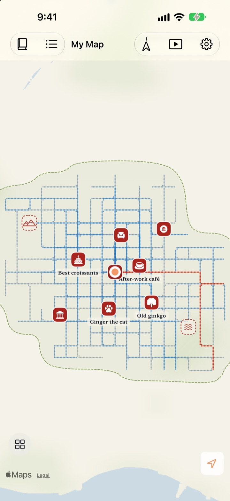
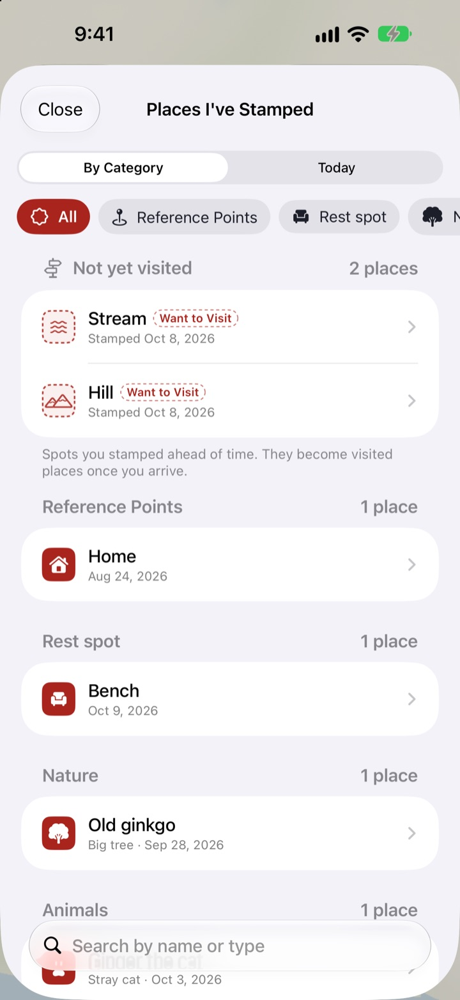
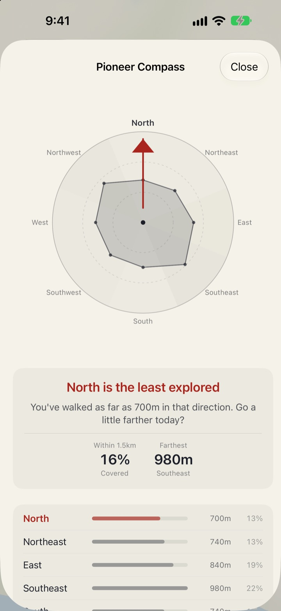
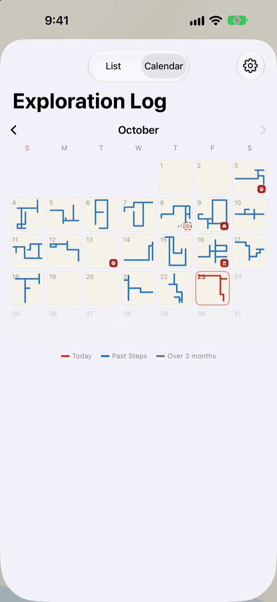

A map that only
fills in on foot
It starts as a blank sheet of paper. Only the places you walk fill in, one dot at a time, and walking the same street a hundred times won't widen it. To grow the map, take a new path.
Every feature is free, with no ads.

Take a walk
Drag a finger or your mouse across the paper to walk. The blue dots are streets you walked before. Watch how Today's Path changes when you retrace them versus head somewhere new.
Walking the same streets every day?
A step counter counts steps but never asks where they went. Home to the station and back fills the ring just fine, so the side street next door stays a mystery for years. Buktu Buktu only counts the paths you walk for the first time, which gives you a reason to go one block out of your way today.
Stamp the places you've been and want to go
Stamp the spot you're standing on, or long-press anywhere on the map. There are 212 stamps to choose from, sorted by category.
A stamp placed where you've never walked stays as a place to visit, then turns into a visited place once you actually get there. Snap a shop sign and the background is cut away, standing up as a sticker for that spot.

Next walk: the direction you've walked least
The Pioneer Compass splits the area around you into eight directions and points to the one you've covered least.
Today's Footprints lines up the places you stopped today in order, with how far you walked between them.

Every day leaves a shape
The calendar draws the shape of each day's walk instead of a number. Keep a daily diary with text and photos, and see how much of each walk was new ground.
Pick a period and watch your map being drawn as a video you can export.

Three steps to start
- 1
Open the app
A blank sheet of paper unfolds.
- 2
Allow location
Choose Always and turn on Motion & Fitness to record walks without opening the app.
- 3
Head out
The less familiar the street, the more the map grows.
Reading the map
- Red dots
- where you walked today
- Indigo dots
- past steps, darker where you pass most often
- Grey dots
- places you haven't been back to in over three months. They fade but never disappear
- Dashed stamp
- a place to visit. It becomes visited once you get there
- Paths You've Drawn
- total length of every path you've walked for the first time
- Today's Path
- how much of today's walk was new
- Browse
- in Settings, opens the Pioneer Compass, Today's Footprints and the drawing film
Choose between the ink map and the illustrated map.
Every feature is free
Free
- A map that fills in only where you walk, with new-path tracking
- 212 stamps and shop-sign stickers
- Pioneer Compass and Today's Footprints
- Calendar and a diary with text and photos
- Export the video of your map being drawn
- Home Screen and Lock Screen widgets
- iCloud sync across devices
Support the developer
- Send a small tip from Settings, if you'd like
- Tips don't unlock anything. The app is the same either way
No ads, no subscription.
Questions
I walked, but nothing showed up on the map.
Go to Settings > Buktu Buktu > Location, choose Always, and turn on Motion & Fitness. That lets it record even when the app is closed. If you picked the battery-saving tracking mode in the app's settings, open the app before you set off. Low-accuracy locations are saved but not drawn.
Are trips by car or subway recorded?
No. It uses motion data and speed to draw only walking and running, and leaves out stretches that look like a vehicle. It can occasionally get this wrong.
I walk the same route every day and the map isn't growing.
That's the rule. Anywhere within 30 m of where you've already walked counts as the same road, so only first-time paths add to Paths You've Drawn. The sidewalk across the street counts as the same road too. The Pioneer Compass shows where you've walked least.
Is my location sent anywhere?
Not to the developer. Your steps, stamps, diary and photos stay on your device and in your own private iCloud, and the developer can't see them. Anonymous usage statistics never include coordinates, diary text, place names or photos. Apple Maps services are used to turn coordinates into place names. See the Privacy Policy below for details.
Will my records move to a new device?
Yes. Sign in with the same Apple Account on the new device and keep iCloud on, and your steps, stamps, diary and photos come with you.
How do I delete a stamp or a photo?
Delete stamps from the Places I've Stamped list, and touch and hold a diary photo to delete it. A way to erase all your paths and diary entries at once is on the roadmap.
How do I add the widget?
Touch and hold the Home Screen, tap Edit > Add Widget, and choose Buktu Buktu. For the Lock Screen, touch and hold it, then tap Customize. The Home Screen widget shows the shape and length of today's path; the Lock Screen shows today's distance.
What do I need?
An iPhone with iOS 17.0 or later.
How do I get in touch?
Send feedback from the app's settings or email us at the address below. We'll reply as soon as we can.
Questions or feedback? Write to leeo@kakao.com.